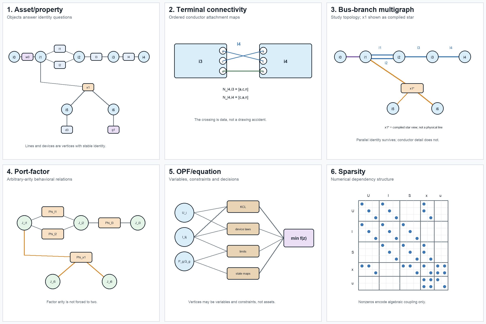
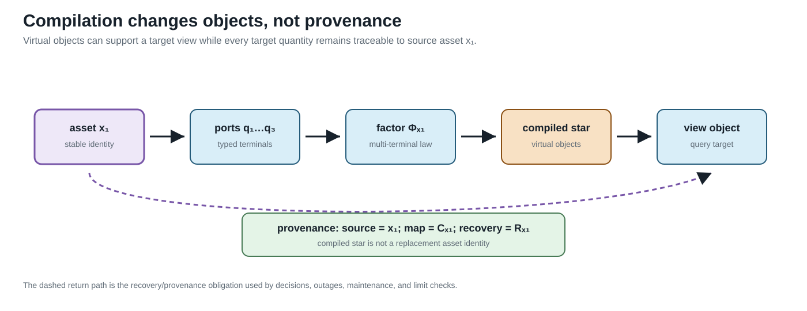

Executable running network
Page status: executable fixture, local solver evidence, and a derived state-conditioned radiality witness; claims are versioned and verification-scoped.
Status and purpose
Empirical artifact, version 0.1.0. The semantic specification now has a numerical realization in data/running-network/v0.1.0.json. The fixture is synthetic. Its values are chosen to make representation choices observable, not to recommend equipment ratings or a particular feeder design.
BMOPFTools is the first implementation platform because its model retains ordered conductor terminals, full impedance matrices, explicit grounding, parallel branches, switches, and an independent n_winding transformer model. The book-level specification remains implementation independent.
What is realized
| Object class | Source identities | Numerical feature under test |
|---|---|---|
| buses | $i_0,\ldots,i_6$ | nonuniform ordered terminal sets |
| switch | $w_0$ | fixed closed state and per-conductor current limits |
| parallel lines | $\ell_1,\ell_2$ | distinct full impedances and distinct limits |
| coupled line | $\ell_3$ | full four-conductor series matrix |
| mapped line | $\ell_4$ | $[a,c,n]\mapsto[c,a,n]$ conductor permutation |
| grounding | $h_n$ | finite neutral-to-earth admittance at $i_2$ |
| transformer | $x_1$ | WYE–WYE–DELTA three-winding model with winding limits |
| loads | $d_1,d_2,d_3,d_4$ | unbalanced wye, single-phase, and delta demand |
| generator | $g_1$ | bounded continuous active and reactive decisions |
BMOPFTools requires each single-phase load to be a two-terminal component. The source load $d_2$ is therefore compiled into d2a and d2c. That realization is recorded explicitly rather than silently redefining a partial-wye object.
Six views of the same source

The panels are not levels in a single hierarchy. The provenance artifact also contains a non-visual simple-topology quotient used by the cycle and radiality definitions:
- the asset/property view retains stable physical identity;
- the terminal view exposes ordered conductor mappings and grounding;
- the bus–branch multigraph supports conventional network algorithms while retaining $\ell_1$ and $\ell_2$ separately. In the figure, $x_1^*$ is an explicitly labelled compiled star used to draw the multi-terminal device; it is not a claim that the transformer is physically three two-terminal lines;
- the port–factor view represents $x_1$ as one factor of arity three;
- the OPF graph makes variables, constraints, limits, and decisions explicit;
- the sparsity graph records numerical coupling but does not claim that a nonzero is a physical branch.
Every generated view must retain a source map. A label such as Phi_x1 is a generated factor identity with source = x1; it is not a replacement asset ID. The complete maps for the six illustrated views, together with the derived simple-topology quotient, are generated in experiments/generated/view-source-maps.json. Automated checks require every generated object to identify an existing fixture source and bind the map to the exact fixture and figure hashes.

The lineage is the operational companion to the view figure: virtual compiled objects are allowed, but source identity, map identity, and recovery remain available for limits, outages, maintenance, and decisions.
Executed checks
The generation script parses the exported BMOPF JSON, runs JSON-schema and model-conformance checks, solves a determined power flow, and solves an OPF with $g_1$ dispatchable. The current artifact reports:
| Check | Result |
|---|---|
| schema valid | yes |
| validation errors | 0 |
| validation warnings | 0 |
| expected map diagnostic | I.TMAP.CROSS_PHASE_LINE |
| expected map diagnostic | I.TMAP.PERMUTED_ORDER |
| power-flow termination | LOCALLY_SOLVED |
| power-flow active loss | 554.317 W |
| OPF termination | LOCALLY_SOLVED |
| OPF objective | -13.2000 |
The negative generator cost is a test device that drives $g_1$ to its active power bounds, making the continuous decision observable. The objective has no economic interpretation. Both the cost and this interpretation must change before the case is used for an economic study.
Reproducibility boundary
Run the complete slice from the repository root:
julia --project=experiments experiments/run_vertical_slice.jl
julia --project=experiments experiments/test/runtests.jlThe generated provenance record includes Julia and package versions, the local BMOPFTools commit, a tracked-diff hash, and hashes of untracked files. The normal development run records local modifications accurately.
An isolated reproduction now clones the committed BMOPFTools revision into a temporary directory, runs the fixture and all tests there, and verifies that the exported fixture is byte-identical to the canonical artifact:
bash scripts/reproduce_clean_fixture.shFixture version 0.1.0 passes at clean BMOPFTools commit b7aa9a1bb48bcc8b790d3bcf5417d6a32036352a. The clean provenance, validation, PF, and OPF outputs are retained under experiments/generated/clean-reproduction. This establishes a pinned local reproduction at that commit; it is not a tagged BMOPFTools release, a guarantee of bit-identical nonlinear solver iterates, or an independent-solver result.
Version 0.1.0 realization boundary
The versioned fixture is the current numerical contract, not a silent completion of every object in the semantic specification. It includes the declared $d_4$ delta demand and $h_{\mathrm{ref}}$ tertiary reference shunt, and it retains $w_0$ as a fixed closed switch. It does not add an undeclared $g_2$ generator or any other convenience object merely to make a continuous solve look more complete. Future fixture versions may promote semantic-only controls, but must change the version, source hashes, and provenance together.
Derived running-network topology states
The generated experiments/generated/running-network-radiality-witness.json lifts the topology predicates to this same fixture without changing version 0.1.0's continuous PF/OPF contract. It retains the four line identities, the $w_0$ switch, the two compiled transformer winding connections, and every ordered terminal map. Four derived states are compared: base switch closed, switch open, $l_2$ outage, and the combined switch-open/$l_2$-outage state.
The base and switch-open states remain member-nonradial because $l_1$ and $l_2$ are parallel members, even though their simple adjacency projection is radial. Removing $l_2$ removes that member cycle. The witness therefore reports both predicates and preserves transformer-factor provenance rather than treating the bus quotient as the source topology.
What remains semantic-only
The fixture currently treats $w_0$ as fixed closed. Discrete switching, contingency selection, investment choices, measurements, and protection zones remain in the semantic specification but are not claimed as executable in version 0.1.0. This boundary prevents a successful continuous OPF from being mistaken for validation of the full decision model.